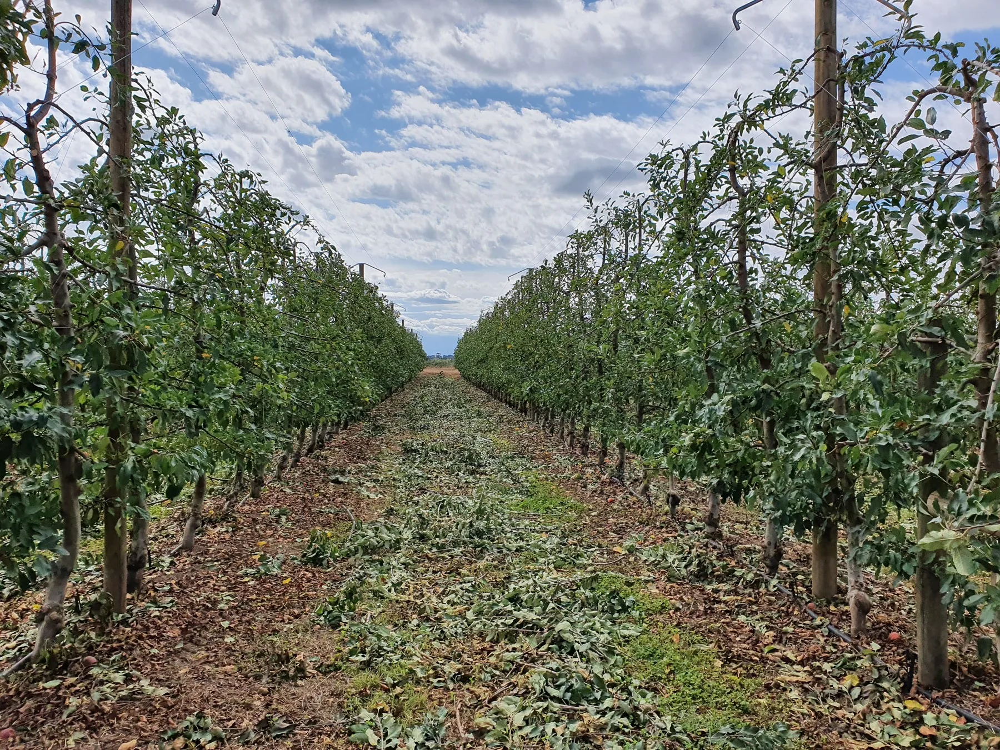
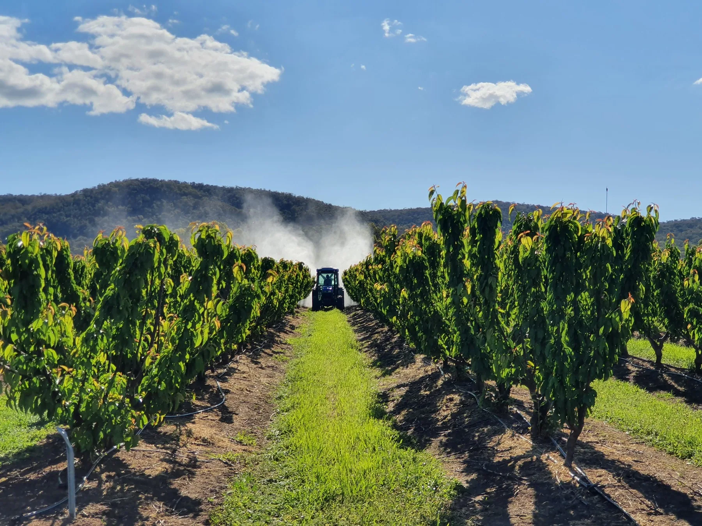

Record the sampled paddock, block or zone, sampling depth and method, crop and production history with the result.

Dry and granular prescription blends
Prescription blends for your crop and soil.
Hybrid-Ag makes dry and granular prescription blends informed by soil testing. Your crop requirements, budget and application equipment help shape the recommendation.
From test results to a prescription
A blend formulated for your crop and soil.
Test results give the team a starting point. Your crop, growing conditions and the way you apply nutrition are part of the discussion before the blend is formulated.
Review the results alongside crop requirements, previous applications and growing conditions.
Discuss the blend format, Nutrient requirements and application details with the team.
kg/ha
Calculating the soil requirement
Total kilograms per hectare of each element needed to balance the soil.
For a soil prescription, these calculations help the team select Nutrient sources and check the proposed application rate. The full soil requirement is not automatically the amount to apply in one season.
The full requirement
The calculated Nutrient requirement for working towards soil balance.
The plan for the season
Considers crop demand, history, budget, equipment and what is practical to address now.
Prescription blends and standard products
A standard product or a blend for your farm.
A standard Hybrid-Ag product has a fixed analysis. A prescription blend is formulated around the requirements identified for your crop and soil.
Decision point
Standard Hybrid-Ag product
Hybrid-Ag prescription blend
Starting point
A product with a pre-set analysis.
The crop and soil requirements, informed by test results and agronomic advice.
Product fit
The application rate and nutrition plan are based on the available analysis.
The formulation and blend format are selected for the identified requirement and planned application.
Area
A standard product may be used across areas with different soil conditions.
The prescription is prepared for the nominated paddock, block or zone and the intended application.
Time horizon
Timing and rate still need to suit the crop and season.
Where soil correction is needed, the requirement can be staged and reviewed across seasons rather than addressed in one application.
Dry and granular soil prescriptions
From the soil calculation to a blend.
The agronomist considers the soil calculation alongside the crop, budget and practical limits of the operation. That discussion shapes the prescription for the season.
01Calculate
Calculate the Nutrient requirement.
Use the soil results to calculate each relevant elemental requirement in kg/ha for the sampled area.
02Prescribe
Formulate the blend.
Select compatible sources, dry or granular format and a practical spread rate, then check the kg/ha supplied by the proposed blend.
03Manufacture
Manufacture the prescription.
Scale the prescription to the nominated hectares, retain the blend sheet and source batches, then mix and check it before dispatch.
Choosing a blend format
Choose a format that suits the application.
The choice between dry and granular supply depends on the prescription and how you will apply it. The formulation and application details need to suit the crop and soil requirements, as well as your equipment.
Dry prescription blend
For bulk soil application.
Selected dry sources and screened powders can be combined in a prescription blend where they suit the spreading equipment and planned application.
Granular prescription blend
Where granules suit the application.
Compatible granular or prilled sources can be selected where flow, machinery or placement makes a granular format more practical for the operation.
The exact materials, proportions and application rate are confirmed for the current recommendation and intended application. They are not universal formulas.

Dry-blend preparation
The blend sheet follows the job through production.
For dry prescription blends, Hybrid-Ag uses the blend sheet during production and checks the finished blend before dispatch.
- Trace
- Source batches are recorded against the blend sheet.
- Prepare
- Ingredients are weighed and powders are screened where required.
- Mix
- Materials are distributed and combined for an even physical blend.
- Check
- The finished blend is physically reviewed before bagging or dispatch.
Planning across seasons
The work may need to be staged over several seasons.
The full calculated requirement may not be practical to address in one season. The work can be staged, with further testing and crop observations informing the next recommendation.
01
Review the soil test. Use the current soil test to calculate the elemental requirement and discuss what the grower needs to address.
02
Plan for the season. Consider crop demand, removal, prior inputs, budget, equipment and operational limits.
03
Confirm the application. Confirm the selected blend, application rate, hectares and practical application plan.
04
Retest and refine. Compare results taken on the same basis, then review the next recommendation alongside crop response.
Start with representative soil data